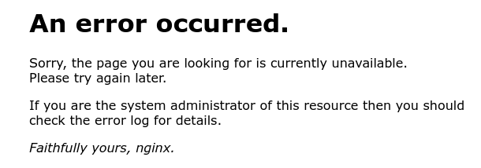

Liebes Team von Magenta!
Ich habe sehr ungewöhnliches Anliegen, jedoch sehr wichtig für mich und meine Arbeit. In Rahmen meiner ärztlichen Tätigkeit muss ich ständig Recherchen betreiben und Artikel lesen in der größten Seite für medizinische Publikationen, nämlich die Seite https://pubmed.ncbi.nlm.nih.gov/. Ich habe aber bitter festgestellt, dass das von meinem Zuhause nicht möglich ist, wenn ich im Wlan von Magenta bin. Es gibt kein Zugriff auf der Seite und das Problem liegt bei Magenta. Sobald ich aufs Handy (mobile Daten von Drei) oder als HotSpot vom Handy zum PC die Seite aufrufe, besteht kein Problem. Ich möchte gerne wissen warum diese Seite nicht unter Magenta geöffnet werden kann. Ich kann mir nicht vorstellen dass eine angesehene, wissenschaftliche Seite auf eine Blackliste or what so ever gelamdet ist. Bitte um eine Überprüfung und rasche Lösung, da für mich einen Zugriff auf diese Seite essentiell ist. Ich hoffe sehr dass dieses Problem gehoben werden kann. LG.
Bearbeitet von killmerBitte versuche einmal die URLs aufzurufen:
https://[2600:1901:0:c831::]/
Bei beiden sollte folgendes, nach dem Zertifikatsfehlers, kommen:

(P.S: ich liebe diese Foren Software)
Hallo killmer!
Liebe Grüße
Michael
Hallo Michael!
Ich schicke einen Screenshot vom Handy im Wlan, die selbe Meldung kommt auch auf dem PC.
Ich benutze den Chrome. Habe aber schon andere Browser probiert, ohne Erfolg.
Ich habe heute auch mit Magenta telefoniert. Es wurde dann irgendwas mit meinem Modem und den IP seitens den Techniker geändert, hat aber nichts gebracht. Das Problem ist ausführlich dokumentiert und mir wurde versichert, dass ich in den nächsten Tagen kontaktieren werde. Es liegt eindeutig nicht an mir, da ich die Situation mit anderen Magenta Kunden verglichen habe. Keiner, den ich kenne, kann zu Hause über Magenta die pubmed Seite öffnen.
Komischerweise hatten die Magenta Auskunft Leute Zugriff. Irgendwas wurde für den normalen User geändert, was genau, kann ich nicht sagen. Die Seite funktionierte vor guten Monat noch.
Liebe Grüße
Hallo killmer!
Vielen Dank für den Screenshot! Das Problem lässt sich nun etwas besser eingrenzen.
Ad Telefonat mit Magenta: Du wirst jetzt höchstwahrscheinlich auf IPv4 umgestellt werden. (kann bis zu 48h dauern; ggf. ist ein Neustart des Modems notwendig)
Folgendes kannst du noch probieren: (Windows 10)
Sollte Du die DNS-Server nicht ändern können, ist wahrscheinlich die Option „DNS-Server automatisch beziehen“ aktiviert. In diesem Fall zunächst bitte die Option „Folgende DNS-Serveradressen verwenden“ aktvieren.
Auf Android: (ab Version 9)
Liebe Grüße
Michael
Lieber Michael!
Vielen Dank für deine Nachricht! Es hat funktioniert! Ich habe aber den 1.1.1.1. Server genommen, da er laut meinem Mann schneller ist.
Mir ist immer noch rätselhaft warum auf einmal im privaten Bereich bei Magenta diesen DNS geändert wurde.
Aber das werde ich wahrscheinlich nie erfahren.
Vielen lieben Dank nochmal!
Ganz liebe Grüße
Dilyana
{kind=link}